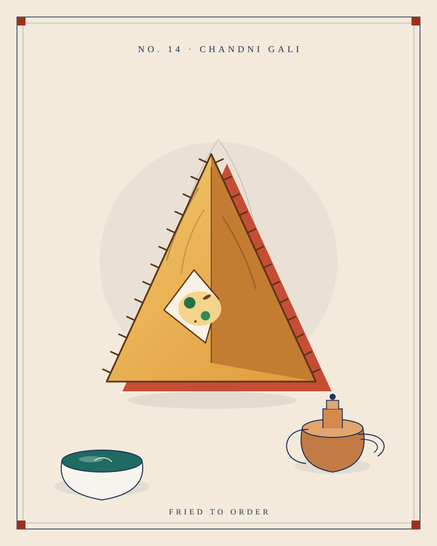
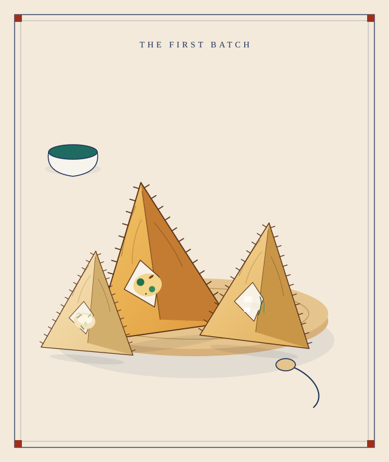
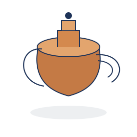
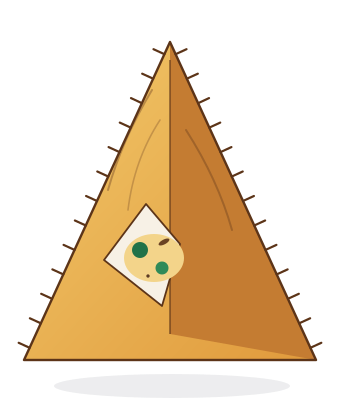
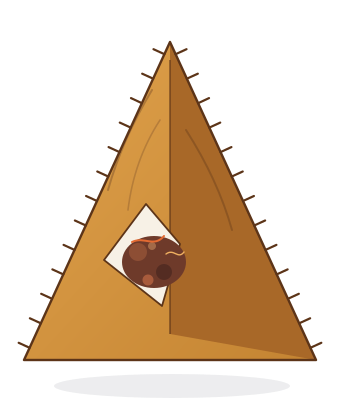
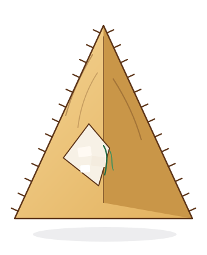
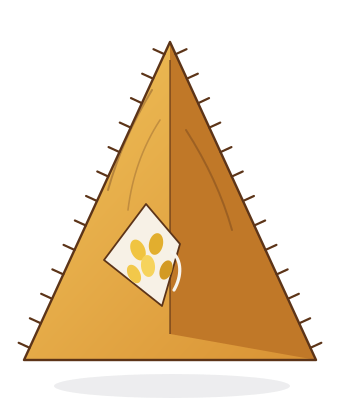
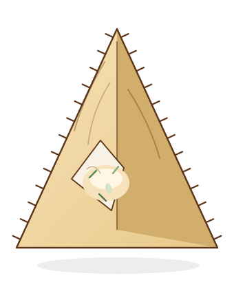
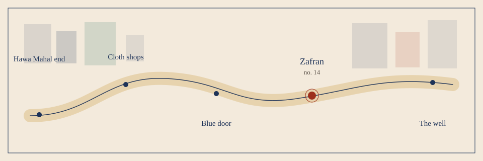

The prints
What the kettle looks like.
Drawn for the house, not borrowed. A still life, five folds, and the lane that leads to the tile.



The five folds
Each one is a print of the same triangle, with the filling showing.





